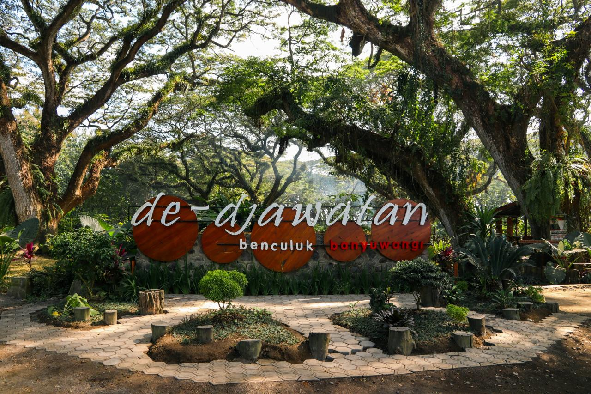
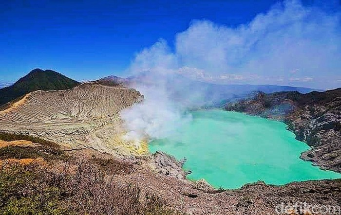
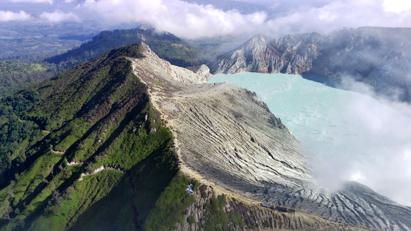
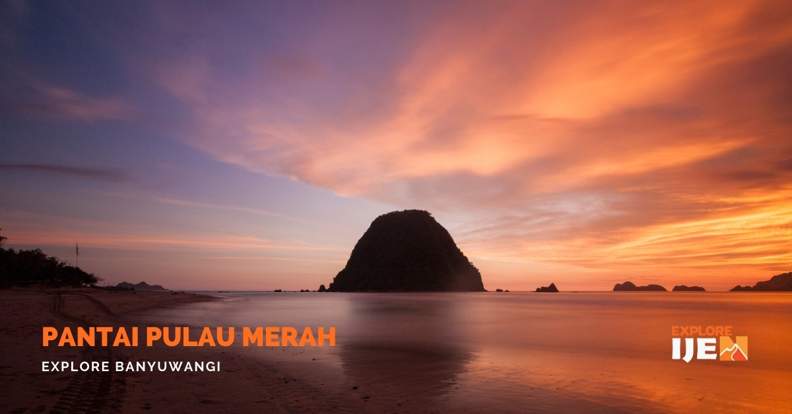

Liputan6.com, Banyuwangi - De Djawatan merupakan sebuah kawasan hutan teduh yang ditumbuhi pepohonan trembesi raksasa.Kawasan hijau ini berlokasi di Purwosari, Benculuk, Kecamatan Cluring, Kabupaten Banyuwangi.
Selain indah, pepohonan trembesi di kanan dan kiri seolah menambah kesan magis di wilayah ini. Meski demikian, hal itu tak mengurangi keindahan yang lebih dominan dari De Djawatan Banyuwangi.
Beberapa orang menyebut, memasuki kawasan De Djawatan serasa dibawa ke dalam setting film The Lord of the Rings. Pepohonan besar, lebat, dan kesan angker akan mengingatkan para pengunjung pada Hutan Fangorn di film tersebut.
Sebelum populer sebagai De Djawatan, kawasan ini dahulu dikenal sebagai Jawatan Benculuk. Djawatan merupakan hutan lindung yang dikelola oleh Perhutani KPH Banyuwangi Selatan, sedangkan Benculuk adalah nama desa di Kecamatan Cluring, Kabupaten Banyuwangi.
Konon, lokasi ini sudah ada sejak zaman penjajahan Belanda. Kawasan ini digunakan sebagai Tempat Penimbunan Kayu (TPK) dari hasil pengelolaan hutan milik Perhutani di Banyuwangi bagian selatan.Karena sudah ada sejak lama, keberadaan pohon-pohon trembesi di kawasan ini pun diperkirakan sudah berusia antara 100 hingga 150 tahun.
Untuk menuju ke De Djawatan, pengunjung hanya perlu menempuh 100 meter perjalanan ke selatan dari pertigaan kantor Samsat Benculuk. Kawasan ini dibuka mulai pukul 08.00 hingga 17.00 WIB. Saat berada di De Djawatan, pengunjung bebas mengambil foto di berbagai spot menarik. Selain itu, hutan wisata De Djawatan juga menyediakan banyak atraksi lainnya.
Pengunjung bisa berkeliling di area De Djawatan dengan menaiki kuda sewaan atau andong. Selain itu, ada juga arena bermain offroad untuk anak-anak dengan dua pilihan, yakni menggunakan motor trail mini atau roda empat dengan ATV.
De Djawatan bisa menjadi salah satu pilihan destinasi wisata Banyuwangi bersama keluarga, teman, atau pasangan. Kawasan ini juga sangat cocok dijadikan lokasi healing di akhir pekan karena menawarkan kesan asri yang menenangkan pikiran dan hati.
(Resla Aknaita Chak)
Taman Wisata Alam Kawah Ijen sempat ditutup untuk wisatawan. Destinasi wisata di Banyuwangi itu dibuka lagi mulai hari ini, namun ada syarat masuknya.
Kawah Ijen kembali menyambut wisatawan mulai hari ini, Sabtu (6/1/2024) dengan sejumlah persyaratan. Salah satunya pengunjung harus menunjukkan surat sehat.
Ini merupakan salah satu hasil dari rapat koordinasi rencana pembukaan jalur pendakian TWA Kawah Ijen di Paltuding, Jumat (5/1). Berdasarkan hasil evaluasi kegiatan kunjungan wisata alam dan rapat koordinasi yang mengikutsertakan stakeholder terkait, kawasan TWA Kawah Ijen kembali dibuka untuk kegiatan wisata alam pendakian dan penelitian umum.
1. Wisatawan dałam keadaan sehat (fisik dan mental), tidak memiliki riwayat penyakit asma, jantung dan wajib menunjukkan surat keterangan sehat dari dokter.
2. Tiket tidak termasuk asuransi, semua pengunjung disarankan untuk memiliki asuransi kecelakaan pribadi.
3. Jika terjadi kecelakaan dalam pendakian/kunjungan dan menyebabkan cedera/meninggal, menjadi tanggung jawab pribadi dan tidak menuntut kepada pengelola TWA Kawah Ijen.
4. Menyiapkan peralatan keselamatan pribadi (sepatu anti slip, jaket dingin, masker, hand sanitizer dll).
5. Tiket yang sudah dibayar tidak dapat berubah hari pendakian atau dibatalkan/pengambilan uang.
6. Dengan membaca dan check list seluruh persyaratan yang disebutkan, pengunjung berarti setuju dengan syarat dan ketentuan yang telah ditetapkan.
Kepala Pos TWA Kawah Ijen Sigit Hariwibowo mengungkapkan pihak pengelola TWA ingin ada surat keterangan dokter sebagai syarat izin masuk mendaki Gunung Ijen sebagai bentuk upaya meminimalisir risiko kecelakaan yang terjadi akibat kondisi pendaki yang kurang sehat.
Aturan ini diduga buntut meninggalnya wisatawan asal Jakarta Budy Juliswanto (64) usai mendaki TWA Ijen pada Sabtu 30 Desember 2023. Pria itu meninggal diduga karena kelelahan dan kehabisan oksigen. Dokter menyebut korban juga memiliki penyakit bawaan yang terdiagnosa jantung.
Untuk pemenuhan kebutuhan syarat-syarat tersebut, pihak pengelola TWA Kawah Ijen menyiagakan petugas kesehatan yang akan melayani pemeriksaan kesehatan bagi pengunjung yang belum memiliki surat keterangan kesehatan. layanan tersebut disediakan tanpa biaya.
Banyuwangi, sebuah destinasi wisata di ujung timur Pulau Jawa menyimpan beragam keindahan alam yang mengagumkan. Salah satu yang paling menarik perhatian adalah Pulau Merah.
Terletak sekitar 60 kilometer dari pusat kota Banyuwangi, Pulau Merah menawarkan pesona alam yang memukau dan keindahan pantai yang menawan. Pulau Merah dikenal karena pasir pantainya yang berwarna kemerahan. Inilah yang menjadi muasal nama unik pulau ini.
Pantai Pulau Merah Banyuwangi menawarkan pemandangan spektakuler dengan pasir merah yang kontras dengan birunya laut. Air laut yang jernih dan ombak yang tenang membuat pantai ini ideal untuk berenang, bersantai, atau snorkeling.
Para pengunjung dapat menikmati keindahan bawah laut yang kaya dengan keanekaragaman hayati, seperti terumbu karang dan ikan-ikan berwarna. Pulau Merah juga dikelilingi oleh hutan tropis yang rimbun dan perbukitan hijau yang memesona.
Wisatawan dapat melakukan trekking ringan untuk mengeksplorasi keindahan alam sekitar, melihat berbagai jenis tumbuhan, dan satwa endemik yang hidup di pulau ini.
Pemandangan matahari terbenam yang memukau dari pulau ini juga menjadi momen yang tak terlupakan. Pulau Merah bukan hanya tentang keindahan alamnya, tetapi juga tentang budaya dan masyarakat lokal yang ramah.
Wisatawan dapat merasakan keramahan penduduk setempat serta mencicipi berbagai hidangan kuliner khas Banyuwangi di sekitar area pantai. Bagi para penggemar fotografi, Pulau Merah adalah surga yang tak ternilai.
Keindahan alam yang berpadu dengan latar belakang pasir merah dan lautan biru menciptakan komposisi yang memukau untuk diabadikan dalam lensa kamera.
Jika Anda mencari liburan yang memadukan keindahan pantai, alam, dan budaya, Pulau Merah di Banyuwangi adalah destinasi yang tidak boleh dilewatkan. Datanglah dan nikmati pesona Pulau Merah yang tak terlupakan.
